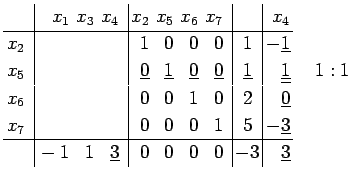

Inhalt Index DeskTop Bronstein

 Optimierung Lineare Optimierung Simplexverfahren Revidiertes Simplexverfahren
Optimierung Lineare Optimierung Simplexverfahren Revidiertes Simplexverfahren


| Beispiel |
|
In die Normalform des unter Ecke und Basis behandelten Beispiels soll x4 aufgenommen werden. Die zugehörige Pivotspalte wird in das folgende linke Tableau eingetragen. Schema 8a, b
 Für j = 1, 3, 4 erhält man : . Der ermittelte Eckpunkt entspricht dem Punkt P7 in der Abbildung aus dem betrachteten Beispiel.
Als nächste Pivotspalte wird j = 3 bestimmt. Die Größe mit |